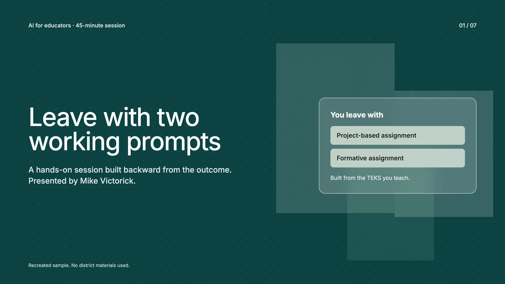
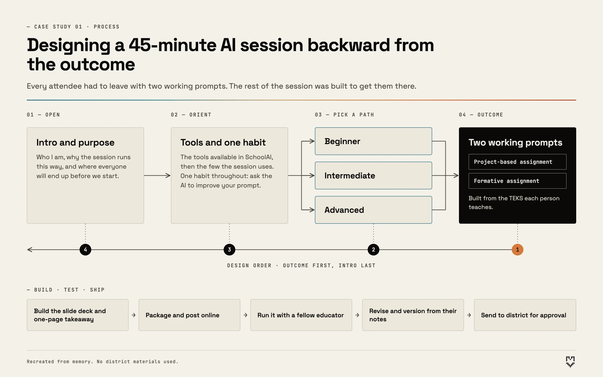
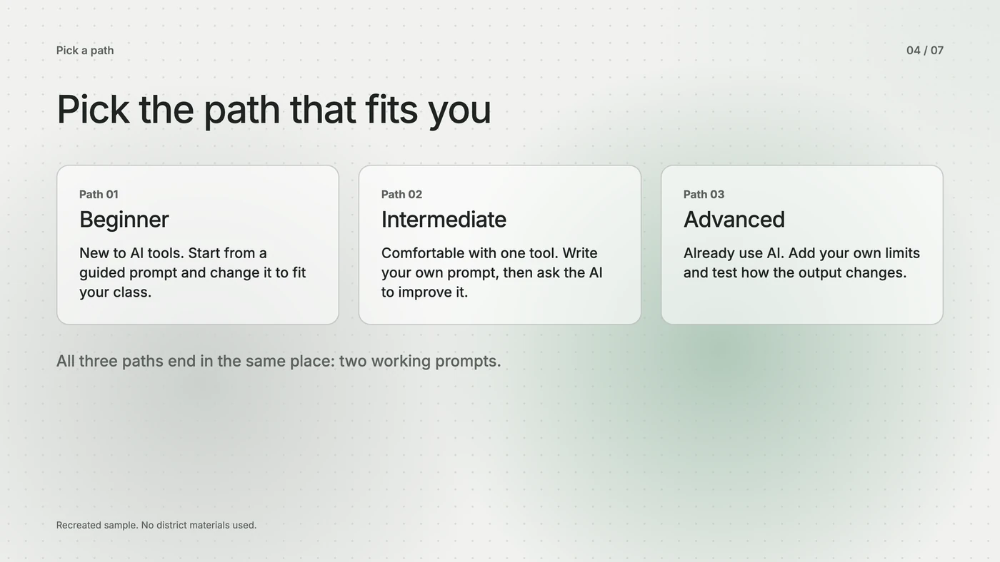
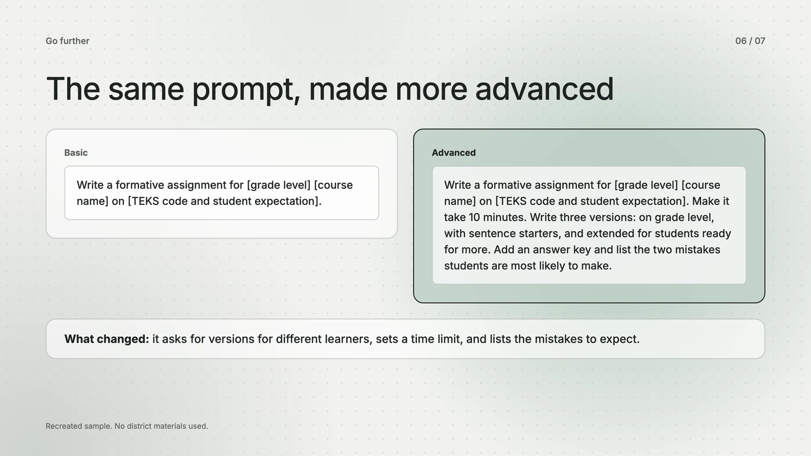
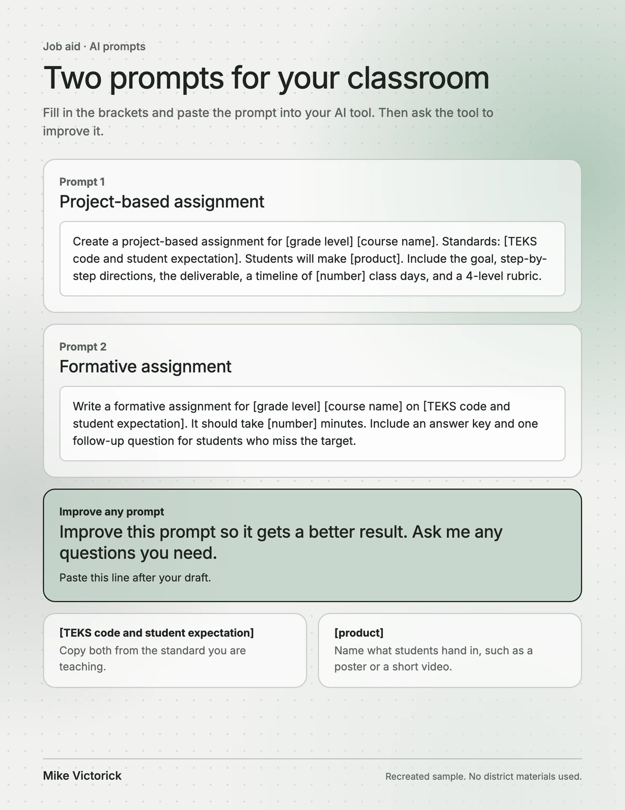

Case study 01
AI Adoption Training for District Educators
— Business problem
A district mandate to build a foundation for AI adoption among educators. Staff had no shared starting point for using AI to reduce workload, and leadership needed a way to introduce it at scale.

Enlarge— Audience
District-wide and mixed: classroom teachers across grade levels and subjects, school administrators, and district instructional leadership.
— Constraints
One 45-minute session. No advance information about attendees' subjects or AI experience. No built-in follow-up time. The content had to work for complete beginners and advanced users in the same room.
— My role
Sole instructional designer and facilitator. I hold SchoolAI's Educator Certification (Level 2). The district approved the session from my brief, and I produced the design, content, and delivery myself.
Approach
I used backward design, starting from one outcome and building everything else to reach it: every attendee leaves with two working AI prompts built from the TEKS they teach, one for a project-based assignment and one for a formative assignment. To differentiate for a room with no shared starting point, I built a three-path structure (beginner, intermediate, advanced) that let people enter at their level while ending at the same outcome. I taught one transferable skill, prompting the AI to improve its own prompt, so the learning outlasts the session. I piloted the session with a fellow educator, revised from their notes, and got it approved by the district.

Enlarge— Evidence of impact
I followed up individually with attendees using the sign-in sheet. Most reported using at least one AI-assisted workflow within the week, and the feedback was strongly positive. The district's lead media specialist also sought me out afterward to say the session was practical. I did not run a formal survey, so these are reports I heard directly.
Deliverables
A slide deck and a one-page takeaway with both prompt templates. The originals are district material and I no longer have them, so the samples below are recreated.

Enlarge
Enlarge
EnlargeWhat I learned
Designing for adults is a different job than designing for students. Adults often carry real apprehension about new technology, even when they use it daily. Running the session through with a peer before delivery showed me the value of outside review when you are designing for an audience you cannot fully see in advance.